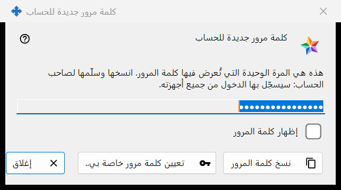
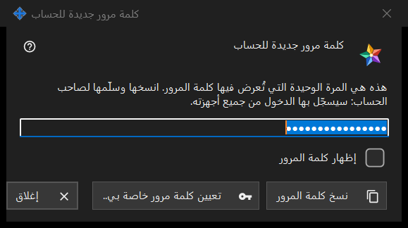

كلمة مرور جديدة للحساب
الغرض من هذه النافذة
يعرض كلمة مرور حساب على خادم التبادل أو يطلبها، في ثلاثة أوضاع: كلمة مرور منشأة تعرض كلمة المرور التي أنشأها البرنامج للتو مرة واحدة (هذا ما في الصورة)؛ وكلمة مرور مكتوبة تطلب كلمة مرور من اختيارك؛ وكلمة مرور محفوظة تعرض كلمة مرور مخزّنة على هذا الكمبيوتر. تُفتح في إعدادات خادم التبادل المحلي في Share Manager بعد إضافة حساب.. أو إعادة تعيين كلمة المرور.. أو تعيين كلمة المرور المشتركة..، وكذلك من أسئلة كلمة مرور المسؤول.


بهذا الترتيب
- المنشأة: اضغط نسخ كلمة المرور (وفعّل إظهار كلمة المرور لقراءتها)، وسلّم كلمة المرور لصاحب الحساب، ثم اضغط إغلاق.
- الخاصة بك: اضغط تعيين كلمة مرور خاصة بي.. أو اختر إدخال كلمة المرور بنفسي، واكتب كلمة مرور تستوفي القاعدة، ثم اضغط حفظ كلمة المرور.
- المحفوظة: اختر الحساب ثم اضغط عرض كلمة المرور.. في قائمة الحسابات.
عناصر النافذة
كلمة المرور المنشأة (في الصورة)
العنوان: كلمة مرور جديدة للحساب. يقول النص التمهيدي: هذه هي المرة الوحيدة التي تُعرض فيها كلمة المرور. انسخها وسلّمها لصاحب الحساب: سيسجّل بها الدخول من جميع أجهزته. الحقل مخفي وللقراءة فقط؛ وإظهار كلمة المرور يكشفها في هذه النافذة وحدها. نسخ كلمة المرور يضعها في الحافظة عبر مسار محمي يُبقيها خارج سجل حافظة Windows والحافظة السحابية، ويردّ: تم نسخ كلمة المرور. يُفرَّغ الحقل عند إغلاق النافذة.
الإغلاق دون نسخ
إذا أغلقت كلمة مرور منشأة لم تنسخها ولم تُظهرها، يسأل البرنامج: هل تريد الإغلاق دون نسخ كلمة المرور؟ ويضيف أنه لا يمكن عرضها مرة أخرى - بعد ذلك يمكن إعادة تعيينها فقط. الجواب الافتراضي هو لا. وعندما تكون كلمة المرور محفوظة على هذا الكمبيوتر لا يُطرح أي سؤال.
تعيين كلمة مرور خاصة بي..
يُستخدم من نافذة الحساب ونافذة كلمة مرور الدعوة المشتركة ونافذة كلمة مرور المسؤول: يغلق هذه النافذة دون استخدام كلمة المرور المنشأة ويطلب كلمة مرور من جديد، وهذه المرة التي تكتبها أنت، وهي تحل محل المنشأة.
كلمة المرور المكتوبة
العنوان: كلمة مرور الحساب، والتسمية: كلمة المرور:، وحقل مخفي مع إظهار كلمة المرور. التلميح: 10 أحرف على الأقل، مع حرف لاتيني كبير وحرف لاتيني صغير ورقم. وأثناء الكتابة يذكر سطر تحذير ما ينقص، مثلًا: يلزم رقم واحد على الأقل. حفظ كلمة المرور يرفض كلمة مرور لا تستوفي القاعدة؛ أما التي تستوفيها فتعود إلى النافذة التي طلبتها، وللخادم الكلمة الأخيرة.
كلمة المرور المحفوظة
يضيف العنوان اسم الدخول إلى كلمة مرور الحساب. تعرض النافذة كلمة المرور المخزّنة على هذا الكمبيوتر للقراءة فقط، مع إظهار كلمة المرور ونسخ كلمة المرور؛ ولا يُطرح أي سؤال عند الإغلاق. تُفتح بزر عرض كلمة المرور.. في قائمة الحسابات، وهو لا يظهر إلا عندما يكون الخيار حفظ كلمات مرور الحسابات على هذا الكمبيوتر قيد التشغيل. الخيار متوقف افتراضيًا؛ وعند تشغيله يسأل البرنامج أولًا، ثم تُحفظ كلمة المرور مشفّرة لحساب Windows الخاص بك، ويستطيع أي برنامج يعمل تحت هذا الحساب قراءتها. كلمة المرور التي عُيّنت قبل تشغيل الخيار لا تُحفظ.